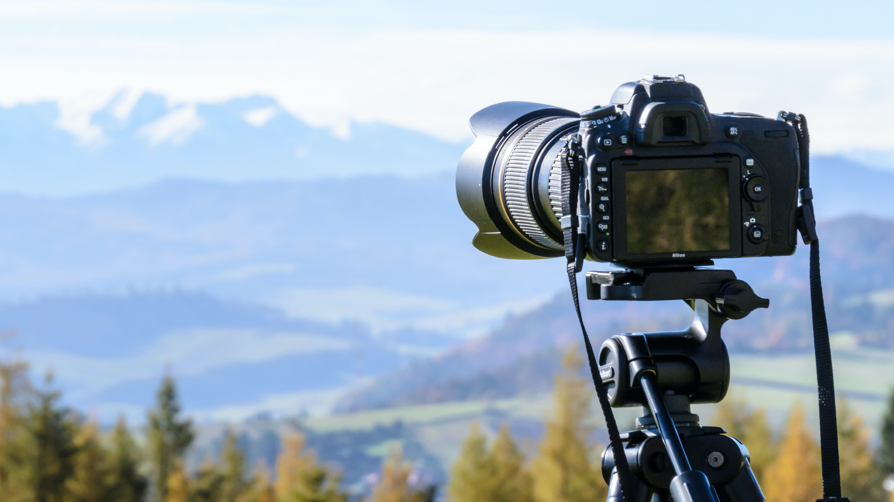
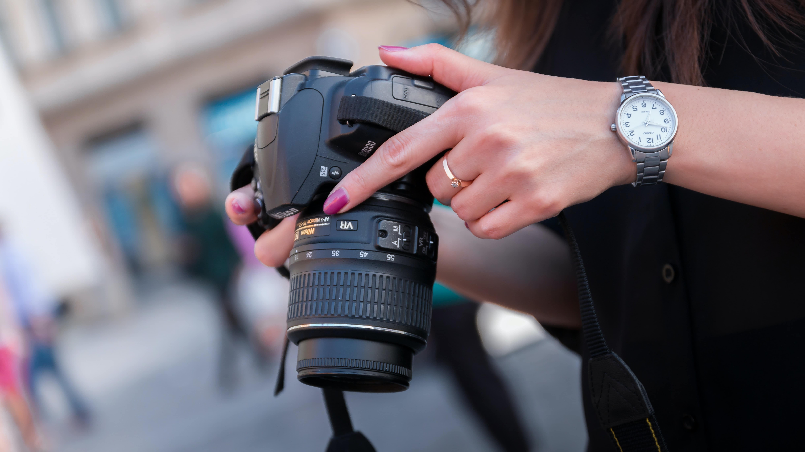
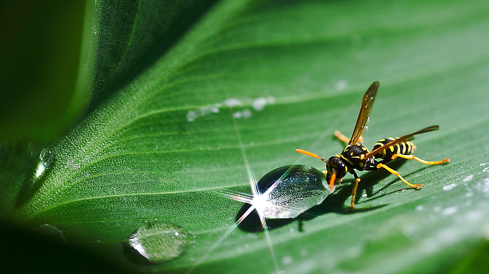
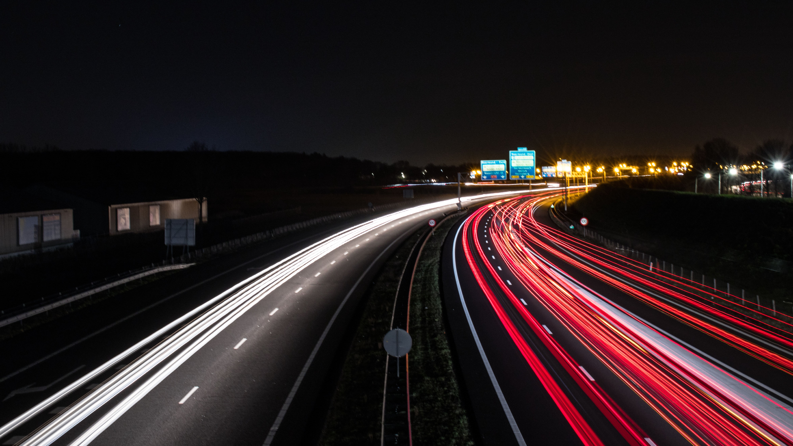
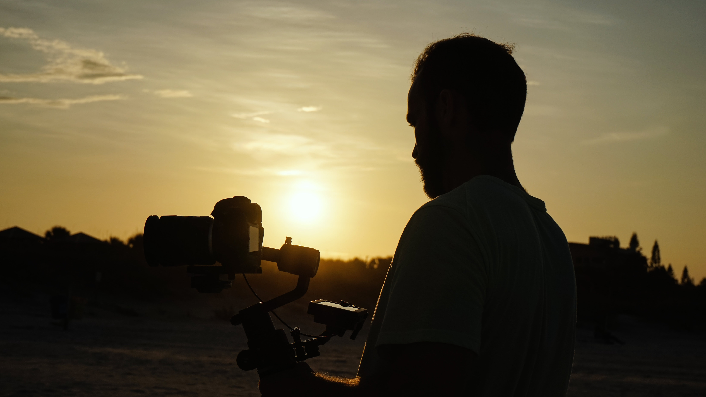

Berisi informasi yang menarik seputar dunia fotografi
Apa itu Fotografi?

Fotografi (bahasa Inggris: photography, yang berasal dari kata
Yunani yaitu "phos": cahaya dan "graphien": melukis/menulis) adalah
proses melukis/menulis dengan menggunakan media cahaya. Sebagai
istilah umum, fotografi berarti proses atau metode untuk
menghasilkan gambar atau foto dari suatu objek dengan merekam
pantulan cahaya yang mengenai objek tersebut pada media yang peka
cahaya. Alat paling populer untuk menangkap cahaya ini adalah
kamera. Tanpa cahaya, tidak ada foto yang bisa dibuat.
Fotografi juga dapat dikatakan sebagai proses dalam menghasilkan
gambar atau foto dari sebuah objek dengan cara melakukan perekaman
dari pantulan cahaya yang mengenai objek tersebut di sebuah media
yang sensitif terhadap cahaya.
Di zaman modern seperti saat ini, sudah sangat jarang sekali
fotografer yang menggunakan film. Jadi kamera digital saat ini
sudah berkembang dan memiliki digital ISO untuk menghasilkan foto
yang berkualitas.
Prinsip Fotografi

Prinsip fotografi ialah memfokuskan cahaya dengan bantuan pembiasan,
sehingga mampu membakar medium penangkap cahaya. Medium tersebut
dibakar dengan luminans (ukuran intensitas cahaya yang berasal dari
sumber dalam satu arah) cahaya yang tepat, dan akan menghasilkan
bayangan identik dengan cahaya yang memasuki medium pembiasan, atau
yang selanjutnya disebut lensa. Agar intensitas cahaya tepat untuk
menghasilkan gambar, dibutuhkan alat bantu ukur bernama lightmeter.
Setelah mendapatkan pencahayaan yang tepat, fotografer bisa mengatur
intensitas cahaya tersebut dengan mengubah pengaturan pada kamera.
Teknik Fotografi
Berisi beberapa teknik fotografi yang sering dipakai atau diterapkan
oleh para fotografer
Macro

Teknik dasar fotografi satu ini membantu fotografer untuk
menangkap gambar dari objek yang kecil. Namun, teknik macro
membutuhkan beberapa alat khusus. Kamu akan memerlukan lensa makro
dan beberapa peralatan lainnya.
Long Exposure

Teknik dasar ini dapat digunakan dalam berbagai situasi, terutama
sebagai cara untuk menciptakan efek dramatis pada objek yang biasa
kita lihat sehari hari. Teknik ini mengharuskan kamu untuk
membiarkan shutter terbuka agak lama agar rona cahaya dapat
tertangkap, dan nantinya akan memudahkanmu untuk mengikuti arah
bergeraknya cahaya tersebut.
Siluet

Teknik ini dikenal karena sering kali digunakan fotografer untuk
gambar yang benar-benar menakjubkan. Mengambil foto siluet yang
baik membutuhkan pengetahuan teknis dan pemahaman cahaya, tetapi
hasilnya akan selalu sepadan dengan usaha yang keluarkan.